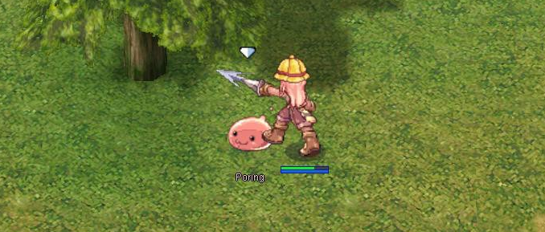
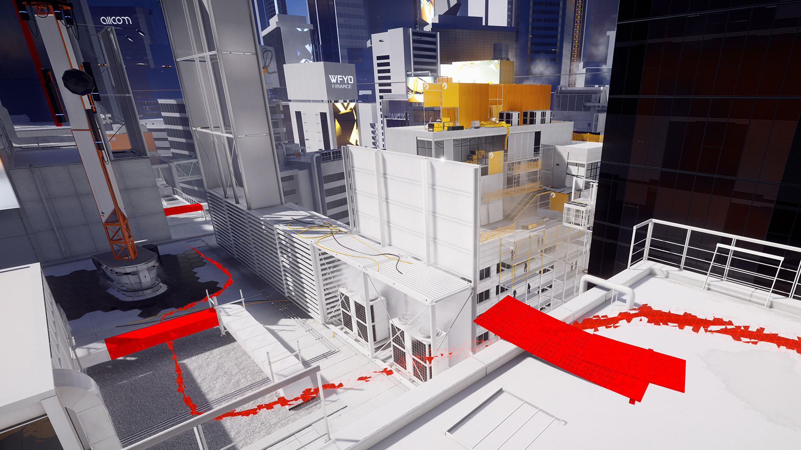

Inspiration
Where I’m coming from.
I’ve been thinking about creating an isometric style game as a spiritual successor to the feel of Ragnarok Online (RO) for an extremely long time.

It only took a few months of playing RO for me to start daydreaming and brainstorming all sorts of features that would “definitely make the game better”.
Other games, like Mirrors Edge, have shown me that verticality in a game can be extremely rewarding. Clambering, smooth and controlled jumps, map directionality.

Shortcomings of Modern Games
In my opinion
- Free Roaming Games
- One of the biggest issues these days, in my opinion, is the use of free floating x,y,z coordinate systems. This perpetually opens a can of worms where players will find themselves jumping or dodge-rolling with abandon, clipping through entities in the world and often glitch their character in minor ways that the game developers have had to guard against.
- Most games include these features, but don’t add any elegance to them. Jumping is often utilized in some contexts, but absolutely useless in others. You may be able to jump to grab a ledge, for example, but if you try to jump out of the way of an attack you just get smacked and thrown to the ground. They didn’t implement any specialized functionality, but disabling jump would be “immersion breaking”.
- Additionally, free roaming means that players often find themselves in entirely unrealistic situations because of their unfettered ability to move around the scene. Especially in open world games.
- Grid Games
- Grid games like RO aren’t off scott free either. Players often find themselves very limited in their ability to control their character. Things can feel clunky or restricted because of the way that characters are expected to stand and move about the map.
- By using grid path-finding and positioning, entity locomotion often looks stiff or mechanical.
The Goals of this Project
In a nutshell.
Hexagonal Node Graph
Entity positioning is controlled by a node graph, where each node has a set maximum number of neighbours of 6. Nodes do not require all 6 neighbours to be filled, though all walkable paths will likely have neighbours.
Players and Mobs can move about the map using Cube Direction,
or X,Y coordinate dijkstra pathfinding.
Blended Locomotion
I want to have the player be able to feel like they are moving freely through the world, though they are ending up on particular nodes rather than floating positions between them.
Movement between nodes will be blended where possible, especially when in combat situations. Leaping, sliding, falling, rolling, jumping will all be possible in movement.
Map Directionality
Design of the maps will lean more toward linear with branding paths.
While I do love the idea of open worlds, they usually end up resulting more as dead open space then interesting.
Controlled “Hack and Slash” Encounters
Encounters between the player and entities should feel good. (Duh) There is so much to go in to here, and I think I’d just like to start programming. I’ll get back to the details here once I have a good graph positioning and locomotion system.
Verticality
At a stretch, I would love players to be able to clamber, climb, and fall in the world. Having mobs hiding on top of cliffs, under bridges, would be exceptional. Not to mention if there are roaming mobs, being able to ambush them would be cool.
This is certainly a long term goal, since the node graph system doesn’t account for verticality.
Conclusion
This has just been a short brain dump to get my idea down onto the blog. There is so much more detail to come, and I’ll be focusing on each system as I work through them.
For now, if you’re seeing this, thanks for reading the first post and for making it this far!